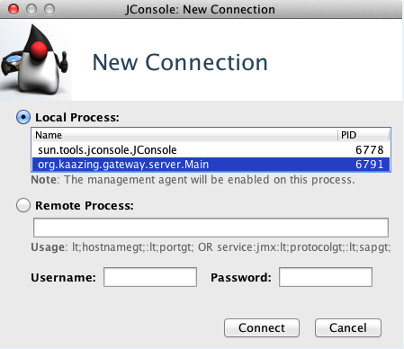
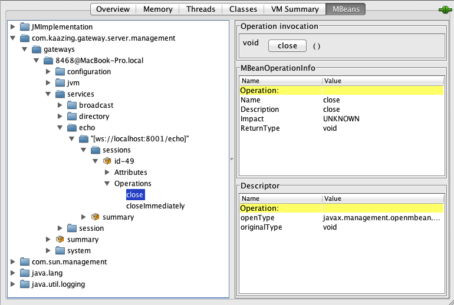

Monitor with JMX
Kaazing Gateway supports Java Management Extension (JMX) access through any JMX-compliant console, such as Java’s built-in Java Management and Monitoring Console (JConsole) or MC4J, or through any program that supports communication using the JMX protocol. The Gateway supports a management.jmx service to allow JMX-compliant applications to monitor current Gateway service and session state and operate on individual sessions. See the Service Reference for information about the JMX management service (management.jmx).
Before You Begin
This procedure is part of Monitor the Gateway:
- Introduction to Monitoring Kaazing Gateway
- Secure Kaazing Gateway Monitoring
- Monitor a Gateway or Gateway cluster
- Monitor with JMX
- Troubleshoot the Gateway
To Monitor with JMX
- Stop the Gateway if it is running.
- Open the Gateway configuration file,
GATEWAY_HOME/gateway-config.xml. - Add the
management.jmxservice as defined in management.jmx. -
Start the Gateway as described in Setting Up the Gateway.
Note: To connect to a JMX service on a Gateway running on an EC2 instance, configure the
GATEWAY_OPTSenvironment variable with the-Djava.rmi.server.hostnameproperty set to the IP address or hostname being used in the RMI registry. For example,GATEWAY_OPTS="-Xmx512m -Djava.rmi.server.hostname=ec2-54-205-184-88.example-1.amazonaws.com. See the topic Configure Kaazing Gateway Using the GATEWAY_OPTS Environment Variable for more information. - Ensure secure monitoring by verifying that your configuration specifies a security realm name and an authorization constraint. This is set up automatically if you use the default Gateway configuration. See Secure Kaazing Gateway Monitoring for more information.
- Start your favorite Java monitoring console or application. This documentation uses JConsole for its examples.
-
Select the local process, for example
org.kaazing.gateway.server.Main(as shown in the following screenshot), then click Connect. (For Windows, the local process name isorg.kaazing.gateway.server.WindowsMain.)
Figure: Monitoring the Local Process with JConsole
Notes:
- To connect to a remote process you must specify an address that uniquely represents the remote instance of the Gateway and provide the administrator’s user name and password (by default,
admin/admin). If there are multiple instances of the Gateway on a remote server then JMX management is hosted on different ports. - For remote monitoring, ensure that you set the correct system properties when you start the Gateway (for example,
Dcom.sun.management.jmxremote.port). For more information, see Monitoring and Management Using JMX Technology from Oracle. - Use the following syntax to access your local Gateway as a remote process (where
hostnameis the remote hostname):service:jmx:rmi://hostname/jndi/rmi://hostname:2020/jmxrmi - Password authentication over the Secure Sockets Layer (SSL) and Transport Layer Security (TLS) is enabled by default in JMX. Consequently, you must have a digital certificate for the hostname of the Gateway in the keystore.db file used by the Gateway. In addition, access to port 2020 must be enabled in your network for the remote monitoring agent to connect to the Gateway. For information on how to create a certificate for the hostname of the Gateway, see Secure Network Traffic with the Gateway.
- To connect to a remote process you must specify an address that uniquely represents the remote instance of the Gateway and provide the administrator’s user name and password (by default,
- JConsole displays information about the particular JVM process you just clicked on or entered.
- Click the MBeans tab.
-
Expand the service that you want to monitor.
For example, the following JConsole screenshot shows an expanded
org.kaazing.gateway.server.management>serviceand expanded theechonode.
Figure: Viewing the Echo Service in JConsole
- Click one of the session IDs. The session data exposed by the MBeans displays. Here, you can examine the user sessions on the Gateway.
Get Started with JMX Monitoring
The steps in this section use the JConsole example from the previous section to demonstrate the procedure.
To Examine Available Sessions:
-
Click the service that you want to examine.
For example, in our running JConsole example, you would click the Echo service, as this is the service being used by the demo you started.
- Expand the connection.
- Expand the sessions node to view the session IDs.
-
Select the session ID you want to manage. The following screenshot shows that you can manually manage the session, such as using the
close()or thecloseImmediatelyoperation, to explicitly close the specific session:
Figure: Subscribing to a Session in JConsole
Next Step
You have configured management with JMX for Kaazing Gateway.
See Also
- The realm element for reference information about the
user-principal-classproperty. - Kaazing Gateway documentation for more information about Gateway administration.